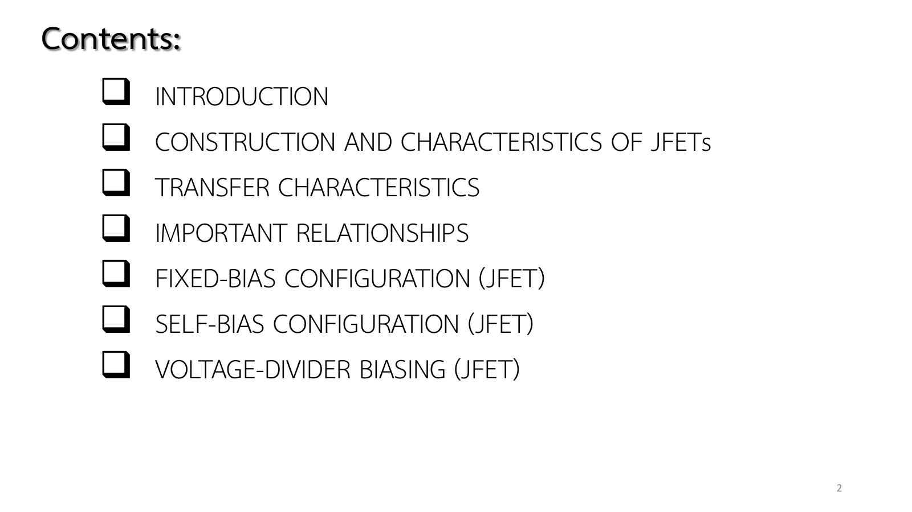
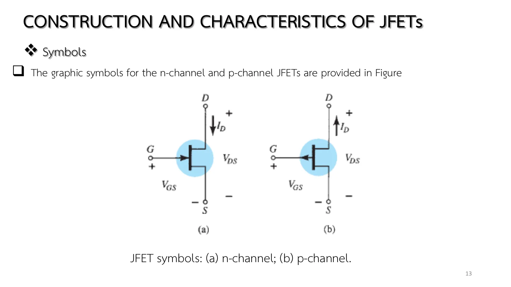

โครงสร้างและลักษณะสมบัติของ JFET JFET construction and characteristics
JFET construction and characteristics A channel whose width the gate voltage controls
สไลด์บทที่ 5 หน้า 2–16 ทรานซิสเตอร์สนามไฟฟ้า (field-effect transistor, FET) เป็นอุปกรณ์สามขาเช่นเดียวกับทรานซิสเตอร์แบบรอยต่อคู่ (bipolar junction transistor, BJT) แต่ควบคุมด้วยแรงดัน \(V_{GS}\) ไม่ใช่กระแส: แรงดันที่เกตปรับความกว้างของบริเวณปลอดพาหะ (depletion region) จึงปรับความกว้างของช่อง (channel) ที่กระแสเดรน \(I_D\) ไหลผ่าน หน้านี้มีภาพตัดขวางของช่องที่ปรับ \(V_{GS}\), \(V_{DS}\) ได้พร้อมลักษณะสมบัติด้านเดรน (ส่วน A) การอ่านรูป 6.11 ตัวต้านทานที่ควบคุมด้วยแรงดัน สรุปสามกรณีของรูป 6.15 และแบบฝึกเพิ่ม
Chapter 5 slides pp. 2–16. The field-effect transistor (FET) is a three-terminal device like the bipolar junction transistor (BJT), but it is controlled by a voltage, \(V_{GS}\), not a current: the gate voltage sets the width of the depletion regions and so the width of the channel through which the drain current \(I_D\) flows. This page has a cross-section of the channel whose \(V_{GS}\), \(V_{DS}\) you can change beside the drain characteristics (section A), a reading of Fig. 6.11, the voltage-controlled resistor, the three cases of Fig. 6.15, and more practice.
ประเด็นสำคัญของหน้านี้
- ควบคุมด้วยแรงดัน: BJT มี \(I_C = f(I_B)\) แต่ JFET มี \(I_D = f(V_{GS})\) (สไลด์หน้า 3) FET เป็นอุปกรณ์ยูนิโพลาร์ (unipolar) นำกระแสด้วยพาหะชนิดเดียว: อิเล็กตรอนใน n-channel หรือโฮลใน p-channel ข้อดี: อิมพีแดนซ์ขาเข้าสูงมาก (1 MΩ ถึงหลายร้อย MΩ) เสถียรต่ออุณหภูมิกว่า และเล็กกว่า จึงเหมาะกับวงจรรวม ข้อเสีย: อัตราขยายแรงดันต่ำกว่า BJT (สไลด์หน้า 4)
- โครงสร้าง (สไลด์หน้า 5, รูป 6.3): แท่งสาร n เป็นช่องระหว่างสารชนิด p สองชั้นที่ต่อกันเป็นเกต (gate, G) ปลายบนของช่องคือเดรน (drain, D) ปลายล่างคือซอร์ส (source, S) รอยต่อ p–n ทั้งสองมีบริเวณปลอดพาหะตามธรรมชาติ
- \(V_{GS}\) = 0 แล้วเพิ่ม \(V_{DS}\) (สไลด์หน้า 6–8): กระแสเพิ่มตามกฎของโอห์มก่อน แรงดันตกในช่องทำให้รอยต่อไบแอสกลับมากขึ้นทางด้านเดรน บริเวณปลอดพาหะจึงกว้างขึ้นจนแตะกันที่ \(V_{DS} = V_P\) (พินช์ออฟ) จากนั้นกระแสคงที่ที่ \(I_{DSS}\) (drain-to-source current with the gate shorted) \(I_G\) = 0 เพราะรอยต่อไบแอสกลับตลอด
- \(V_{GS}\) < 0 (สไลด์หน้า 9–10, รูป 6.11): แรงดันลบที่เกตบีบช่องตั้งแต่ต้น อิ่มตัวเร็วขึ้นที่กระแสต่ำลง จนที่ \(V_{GS} = V_P\) (ใบข้อมูลเรียก \(V_{GS(\text{off})}\)) กระแสเป็นศูนย์ ทางขวาของแนวพินช์ออฟคือย่านอิ่มตัว (ย่านกระแสคงที่ ใช้ขยายสัญญาณ) ทางซ้ายคือย่านโอห์มิก
- ตัวต้านทานควบคุมด้วยแรงดัน (สไลด์หน้า 11): ในย่านโอห์มิก JFET คือตัวต้านทาน \(r_d = r_o/(1 - V_{GS}/V_P)^2\) (สมการ 6.1) ใช้ในวงจรควบคุมอัตราขยายอัตโนมัติได้
- p-channel และสัญลักษณ์ (สไลด์หน้า 12–13): สลับสาร p กับ n ขั้วแรงดันและทิศกระแสกลับหมด (\(V_P\) > 0, \(V_{DS}\) < 0) ลูกศรที่เกตชี้เข้าสำหรับ n-channel (ทิศที่ \(I_G\) จะไหลถ้ารอยต่อไบแอสตรง) และชี้ออกสำหรับ p-channel สรุป (สไลด์หน้า 14–16): \(V_{GS}\) = 0 ให้ \(I_{DSS}\), \(|V_{GS}| \ge |V_P|\) ให้ 0, ระหว่างนั้นอยู่ระหว่าง 0 กับ \(I_{DSS}\)
Key points of this page
- Voltage-controlled: a BJT has \(I_C = f(I_B)\), a JFET \(I_D = f(V_{GS})\) (slide p. 3). The FET is unipolar, conducting with one kind of carrier: electrons in an n-channel, holes in a p-channel. Advantages: a very high input impedance (1 MΩ to hundreds of MΩ), better temperature stability, smaller size, hence ideal for integrated circuits. Drawback: a lower voltage gain than a BJT (slide p. 4).
- Construction (slide p. 5, Fig. 6.3): a bar of n-material forms the channel between two layers of p-material joined as the gate (G); the top of the channel is the drain (D), the bottom the source (S). Both p–n junctions have their natural depletion regions.
- \(V_{GS}\) = 0, raising \(V_{DS}\) (slides pp. 6–8): the current first follows Ohm's law; the drop along the channel reverse-biases the junctions more toward the drain, the depletion regions widen until they touch at \(V_{DS} = V_P\) (pinch-off), and the current then stays at \(I_{DSS}\) (the drain-to-source current with the gate shorted). \(I_G\) = 0 because the junctions are always reverse-biased.
- \(V_{GS}\) < 0 (slides pp. 9–10, Fig. 6.11): a negative gate voltage narrows the channel from the start; saturation comes sooner and lower, until at \(V_{GS} = V_P\) (\(V_{GS(\text{off})}\) on data sheets) the current is zero. Right of the pinch-off locus is the saturation (constant-current) region used for amplification, left of it the ohmic region.
- The voltage-controlled resistor (slide p. 11): in the ohmic region the JFET is a resistor, \(r_d = r_o/(1 - V_{GS}/V_P)^2\) (Eq. 6.1), usable in automatic gain control.
- p-channel and symbols (slides pp. 12–13): swap p and n and every polarity and current direction turns round (\(V_P\) > 0, \(V_{DS}\) < 0). The gate arrow points in for an n-channel (the way \(I_G\) would flow if the junction were forward-biased) and out for a p-channel. Summary (slides pp. 14–16): \(V_{GS}\) = 0 gives \(I_{DSS}\), \(|V_{GS}| \ge |V_P|\) gives 0, and in between the current lies between 0 and \(I_{DSS}\).

![Chapter 5 slide 3, Introduction: the field-effect transistor (FET) is a three-terminal device used for a variety of applications; the primary difference between the two types of transistors is that the BJT is a current-controlled device and the JFET a voltage-controlled device, as shown in the figure; there are n-channel and p-channel field-effect transistors. Figure 6.1: a BJT block with the control current I_B and the output I_C, and a FET block with the control voltage V_GS and the output I_D.](slides/ch5/p03.webp)
![Chapter 5 slide 4, Introduction: the FET is a unipolar device depending solely on either electron (n-channel) or hole (p-channel) conduction; one of the most important characteristics of the FET is its high input impedance; FETs are more temperature stable than BJTs; FETs are usually smaller in construction than BJTs, making them particularly useful in integrated-circuit (IC) chips; two types of FETs will be introduced in this chapter, the junction field-effect transistor (JFET) and the metal-oxide-semiconductor field-effect transistor (MOSFET).](slides/ch5/p04.webp)
![Chapter 5 slide 5, Construction and Characteristics of JFETs: the basic construction of the n-channel JFET is shown in the figure; the top of the n-type channel is connected through an ohmic contact to a terminal referred to as the drain (D); the lower end of the same material is connected through an ohmic contact to a terminal referred to as the source (S); the two p-type materials are connected together and to the gate (G) terminal; a depletion region is that region void of free carriers. Figure 6.3: the n-channel between two p regions with depletion regions, drain at the top, source at the bottom, gate on the sides; and Fig. 6.4, the water analogy with a gate valve between source and drain.](slides/ch5/p05.webp)

ช่องและบริเวณปลอดพาหะ: \(V_{GS}\) บีบ \(V_{DS}\) ดึง
The channel and its depletion regions: \(V_{GS}\) squeezes, \(V_{DS}\) pulls
![Chapter 5 slide 6, Construction and Characteristics of JFETs, in case V_GS = 0 V and V_DS some positive value: the instant the voltage V_DD (= V_DS) is applied, the electrons will be drawn to the drain terminal; the path of charge flow clearly reveals that the drain and source currents are equivalent (I_D = I_S); the flow of charge is relatively uninhibited and limited solely by the resistance of the n-channel between drain and source. Figure 6.5: the JFET with V_GS = 0 V, electrons moving up the channel toward V_DD; Fig. 6.6: the channel as a chain of resistances with 0.5 V, 1 V, 1.5 V along it and I_G = 0 A.](slides/ch5/p06.webp)
![Chapter 5 slide 7, Construction and Characteristics of JFETs, in case V_GS = 0 V: if V_DS is increased to a level where it appears that the two depletion regions would touch, as shown in the figure, a condition referred to as pinch-off will result; the level of V_DS that establishes this condition is referred to as the pinch-off voltage and is denoted by V_P, as shown in the figure. Figure 6.7: I_D against V_DS for V_GS = 0 V, the n-channel resistance region rising to the saturation level with increasing resistance due to the narrowing channel, V_P marked; Fig. 6.8: the depletion regions touching at V_DS = V_P.](slides/ch5/p07.webp)
![Chapter 5 slide 9, Construction and Characteristics of JFETs, in case V_GS < 0 V: a negative voltage of −1 V has been applied between the gate and source terminals for a low level of V_DS; the effect of the applied negative-bias V_GS is to establish depletion regions similar to those obtained with V_GS = 0 V but at lower levels of V_DS. Figure 6.11: n-channel JFET characteristics with I_DSS = 8 mA and V_P = −4 V, the curves for V_GS = 0, −1, −2, −3 and −4 V, the ohmic region, the saturation region and the locus of pinch-off values; Fig. 6.10: the JFET with V_GS = −1 V and I_G = 0 A.](slides/ch5/p09.webp)

ภาพตัดขวางคือรูป 6.3/6.5: ช่อง n (สีฟ้า) ระหว่างเกต p สองข้าง (สีชมพู) แถบสีเหลืองคือบริเวณปลอดพาหะซึ่งกว้างขึ้นตามไบแอสกลับของรอยต่อ: \(V_{GS}\) ที่ลบมากขึ้นบีบทั้งช่อง ส่วน \(V_{DS}\) ดึงให้กว้างทางด้านเดรนจนแตะกัน (พินช์ออฟ) อิเล็กตรอนวิ่งจากซอร์สไปเดรนเร็วตาม \(I_D\) กราฟขวาคือรูป 6.11 ของอุปกรณ์ตัวเดียวกันพร้อมจุดทำงาน ลองเพิ่ม \(V_{DS}\) ที่ \(V_{GS}\) = 0 แล้วดูจุดเดินตามเส้นจนราบที่ 8 mA แล้วลด \(V_{GS}\) ลงทีละ 1 V สลับเป็น p-channel (รูป 6.12) เพื่อดูขั้วกลับ
The cross-section is Fig. 6.3/6.5: the n-channel (blue) between the two p-gates (pink). The yellow strips are the depletion regions, which widen with the reverse bias of the junctions: a more negative \(V_{GS}\) squeezes the whole channel, while \(V_{DS}\) widens them toward the drain until they touch (pinch-off). Electrons run from source to drain at a speed set by \(I_D\). The graph on the right is Fig. 6.11 for the same device, with the operating point. Raise \(V_{DS}\) at \(V_{GS}\) = 0 and watch the point follow the curve until it levels off at 8 mA, then lower \(V_{GS}\) 1 V at a time. Switch to p-channel (Fig. 6.12) to see every polarity reversed.
อ่านรูป 6.11: \(I_{DSS}\), \(V_P\) และแนวพินช์ออฟ
Reading Fig. 6.11: \(I_{DSS}\), \(V_P\) and the pinch-off locus
จากรูป 6.11 (\(I_{DSS}\) = 8 mA, \(V_P\) = −4 V) จงบอก \(I_{DSS}\) และ \(V_P\) กระแสอิ่มตัวเมื่อ \(V_{GS}\) = −1 V และแรงดัน \(V_{DS}\) ที่เกิดพินช์ออฟเมื่อ \(V_{GS}\) = −1 V
From Fig. 6.11 (\(I_{DSS}\) = 8 mA, \(V_P\) = −4 V) give \(I_{DSS}\) and \(V_P\), the saturation current at \(V_{GS}\) = −1 V, and the \(V_{DS}\) at which pinch-off occurs when \(V_{GS}\) = −1 V.
ภาพจำลองคือวงจรของรูป 6.5/6.10: แหล่งจ่าย \(V_{GG}\) ที่เกต (ขั้ว − ด้านเกต จึง \(V_{GS} = -V_{GG}\)) และ \(V_{DD}\) คร่อมเดรน–ซอร์สโดยตรง แต่ละขั้นเปลี่ยนแหล่งจ่ายแล้วจุดทำงานเลื่อนบนรูป 6.11 ทางขวา ลองตอบก่อน
The simulation is the circuit of Figs. 6.5/6.10: a supply \(V_{GG}\) at the gate (− toward the gate, so \(V_{GS} = -V_{GG}\)) and \(V_{DD}\) straight across drain–source. Each step changes the supplies and the operating point moves on Fig. 6.11 on the right. Try it first.
ตัวต้านทานที่ควบคุมด้วยแรงดัน
The voltage-controlled resistor
![Chapter 5 slide 11, Construction and Characteristics of JFETs, voltage-controlled resistor: the region to the left of the pinch-off locus of the figure is referred to as the ohmic or voltage-controlled resistance region; as V_GS becomes more and more negative, the slope of each curve becomes more and more horizontal, corresponding with an increasing resistance level; the following equation will provide a good first approximation to the resistance level in terms of the applied voltage V_GS: r_d = r_o/(1 − V_GS/V_P)², where r_o is the resistance with V_GS = 0 V and r_d the resistance at a particular level of V_GS.](slides/ch5/p11.webp)
JFET n-channel ตัวหนึ่งมี \(r_o\) = 10 kΩ (ที่ \(V_{GS}\) = 0) และ \(V_P\) = −6 V จงหาความต้านทาน \(r_d\) ของช่องเมื่อ \(V_{GS}\) = −3 V
An n-channel JFET has \(r_o\) = 10 kΩ (at \(V_{GS}\) = 0) and \(V_P\) = −6 V. Find the channel resistance \(r_d\) at \(V_{GS}\) = −3 V.
ภาพจำลองใช้อุปกรณ์ที่มี \(r_o\) = 10 kΩ (\(I_{DSS}\) = 0.3 mA, \(V_P\) = −6 V) กับ \(V_{DS}\) = 1 V เล็ก ๆ ในย่านโอห์มิก ป้ายบอก \(V_{DS}/I_D\) ที่วัดได้ ลองตอบก่อน
The simulation uses a device with \(r_o\) = 10 kΩ (\(I_{DSS}\) = 0.3 mA, \(V_P\) = −6 V) at a small \(V_{DS}\) = 1 V in the ohmic region; the badge shows the measured \(V_{DS}/I_D\). Try it first.
สามกรณีของรูป 6.15
The three cases of Fig. 6.15
JFET ของรูป 6.11 (\(I_{DSS}\) = 8 mA, \(V_P\) = −4 V) ต่อกับ \(V_{DD}\) = 12 V ตามรูป 6.15 จงหา \(I_D\) เมื่อ \(V_{GG}\) = 0, 1 V และ 4 V
The JFET of Fig. 6.11 (\(I_{DSS}\) = 8 mA, \(V_P\) = −4 V) is connected to \(V_{DD}\) = 12 V as in Fig. 6.15. Find \(I_D\) for \(V_{GG}\) = 0, 1 V and 4 V.
กราฟข้างภาพคือเส้นโค้งถ่ายโอน \(I_D\)–\(V_{GS}\) ที่หน้า 5.2 จะอธิบาย (สมการของ Shockley) ตอนนี้แค่อ่านค่า ลองตอบก่อน
The side graph is the transfer curve \(I_D\)–\(V_{GS}\) that page 5.2 explains (Shockley's equation); for now just read it. Try it first.
ฝึกเพิ่ม
More practice
ลองทำดู 1 — ดูพินช์ออฟเกิดขึ้น
- ส่วน A ตั้ง \(V_{GS}\) = 0 แล้วเลื่อน \(V_{DS}\) จาก 0 ถึง 4 V ช้า ๆ: แถบเหลืองด้านเดรนกว้างขึ้นจนแตะกันพอดีที่ 4 V ป้ายเปลี่ยนจากย่านโอห์มิกเป็นย่านอิ่มตัว และจุดบนกราฟถึงหัวเข่าของเส้น
- เลื่อนต่อถึง 20 V: ช่องที่แตะกันยาวขึ้น แต่ \(I_D\) ไม่เปลี่ยน นี่คือพฤติกรรมแหล่งจ่ายกระแส
- ตั้ง \(V_{GS}\) = −3 V: แถบเหลืองกว้างตั้งแต่ \(V_{DS}\) = 0 พินช์ออฟเกิดที่ 1 V และกระแสเหลือ 0.5 mA
ลองทำดู 2 — p-channel
- สลับเป็น p-channel: ช่องเป็นสาร p (โฮลเป็นพาหะ) เกตเป็นสาร n แหล่งจ่ายกลับขั้วทั้งสอง \(V_{GS}\) เป็นบวก \(V_{DS}\) เป็นลบ แต่รูปร่างของทุกอย่างเหมือนเดิม
- ข้อ 2: ถ้า \(V_{GS}\) = −1.5 V (หนึ่งในสี่ของ \(V_P\)) สมการ 6.1 ให้ \(r_d\) = 10/(0.75)² = 17.8 kΩ ลองเทียบกับที่ภาพจำลองวัดได้
Try this 1 — watch pinch-off happen
- In section A set \(V_{GS}\) = 0 and slide \(V_{DS}\) slowly from 0 to 4 V: the yellow strips widen at the drain end until they just touch at 4 V, the badge turns from the ohmic region to saturation, and the point on the graph reaches the knee of the curve.
- Keep going to 20 V: the touching part grows longer but \(I_D\) does not change: current-source behaviour.
- Set \(V_{GS}\) = −3 V: the strips are wide from \(V_{DS}\) = 0 on, pinch-off comes at 1 V, and only 0.5 mA is left.
Try this 2 — p-channel
- Switch to p-channel: the channel is p-material (holes are the carriers), the gates n-material, both supplies are turned round, \(V_{GS}\) is positive and \(V_{DS}\) negative, but every shape is the same.
- Problem 2: at \(V_{GS}\) = −1.5 V (a quarter of \(V_P\)) Eq. 6.1 gives \(r_d\) = 10/(0.75)² = 17.8 kΩ; compare with what the simulation measures.